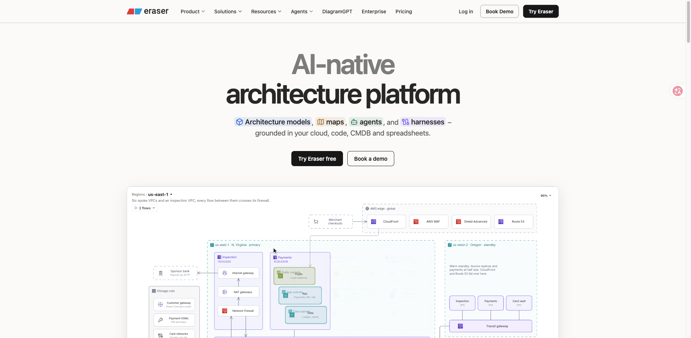

把系统设计文档和架构图写在同一份文本里 —— 改一段描述，图跟着重排。图不是附件，是文档的一部分。
左：设计文档原文 右：由它生成的架构图
目标 把 checkout 的支付授权从 Order 服务里拆出来，独立扩缩容。
约束 授权 P99 < 300ms；账本只追加不修改；支付事件经 SQS 扇出给下游。
决策 Payments 独占 Postgres 写路径，Redis 只存会话与幂等键。
Eraser 的视觉语言是浅色、精确、无装饰：白底配极淡点阵，节点是白卡或淡彩卡（浅绿 = 计算、浅蓝 = 数据）配 1px 同色描边和一枚小图标，云与 VPC 边界用青绿虚线框圈出来，连线 1.1px 灰色带小箭头，文字走无衬线体。它刻意长得像“一份能点开的架构文档”，而不是 PPT 里长出来的图。

面向技术设计的文档 + 图平台。你在文档里写结构描述（或让 AI 起草），Eraser 把它渲染成架构图、时序图、流程图，并提供版本历史 —— 设计文档改到 v7，图也跟着到 v7。
类别上它被归在 APIs & Dev Tools，不是白板工具。它的对手是 Confluence 里的设计文档 + 一张贴上去的 draw.io 图。